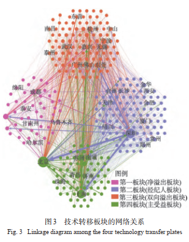
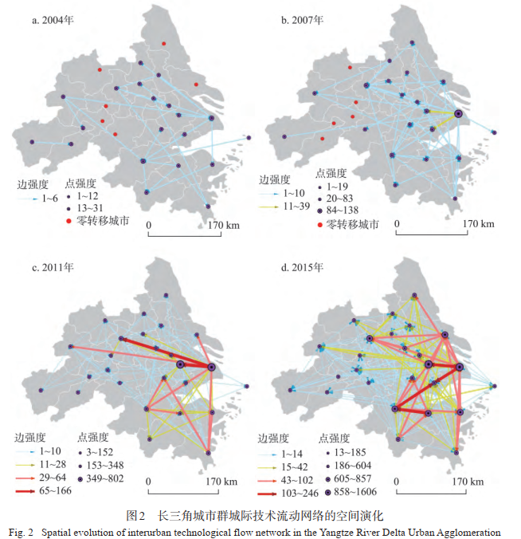
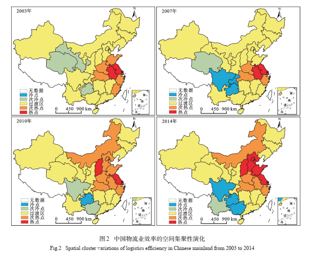

|
Mingming Guan (管 明明) |
News
- [2019.12] Invited as a lecturer for Housing and Urban-Rural Development Bureau of Foshan,Theme：“Analysis of China's Affordable Housing Policy”
- [2019.04] One paper was accepted by AAG Annual Meeting
Research Interest
I'm interested in economic geography, urban and regional development, and housing development planning.Education Experience
- 09/2016-06/2019, East China Normal University， M.S. in Human geography, Shanghai Average course score：89
- 09/2012-06/2016, Jiangxi Normal University， B.S. in Geography science, Nanchang GPA：3.8/4.0
Work Experience
- 06/2019-Now， Guangdong Urban and Rural Planning and Design Institute，Guangzhou
- Assistant engineer in urban planning
- Representative Project： 《Land Spatial planning of Dongguan (2020-2035) 》, Special Subject: Housing and People's Livelihoods
《The 14th Five-Year Planning for Affordable Housing in Jiangmen (2020-2025)》
《Integrated Housing Development Planning for the Guangzhou-Foshan-Qinyuan-Zhaoqing Metropolitan Area (2018—2025)》
《Research on Key Technologies of Innovation Space in Guangdong-Hong Kong-Macao Greater Bay Area》
Publications
[1] Chengliang LIU, Mingming GUAN, “Spatio-temporal evolution of interurban technological flow network in the Yangtze River Delta Urban Agglomeration: From the perspective of patent transaction network,” GEOGRAPHICAL RESEARCH, 2018, 37(5): 981-994. (CSSCI，Top journals in Chinese geography, The first author is my supervisor )
[2] Chengliang LIU, Mingming GUAN, “Spatial pattern and influential mechanism of interurban technology transfer network in China,” Acta Geographica Sinica, 2018, 73(8): 1462-1477. (CSSCI，Top journals in Chinese geography, The first author is my supervisor)
[3] Chengliang LIU, Mingming GUAN, “Spatial pattern and influential mechanism of interurban technology transfer network in China,” SCIENTIA GEOGRAPHICA SINICA, 2017, 37(12): 1805-1814. (CSSCI，Top journals in Chinese geography, The first author is my supervisor )
[4] Dezhong,DU Debin,CHEN Ying, Mingming GUAN, “Technology transfer in China's city system: Process, pattern and influencing factors,” Acta Geographica Sinica, 2017, 37(12): 1805-1814. (CSSCI，Top journals in Chinese geography )
[5] Mingming GUAN,Liu Chengliang, “Comparing China's Urban Airline and Innovation Networks,” Working paper in East China Normal University Graduate Forum, 2019.
[6] Mingming GUAN,Liu Chengliang, “Does High-Speed Rail Promote Regional Innovation？——an Evidence from China,” Conference paper in 2019 AAG Annual Meeting, 2019.
Skills
Research extracts- Network analysis I have mastered the relevant theories about social network analysis and complex networks, and used these analytic methods to study knowledge flows between Chinese cities.
- Econometric I have a solid foundation of advanced econometrics which offers me a better understanding of data science algorithms and statistical analysis. In addition, I am able to use STATA for empirical research.
- Data visualization As a geography student, I am interested in the visualization of various maps，In my studies and work practice, I often draw various maps for my team, which makes the presentation of projects more colorful

Software：Gephi，Ucinet

Software：Stata，MATLAB

Software：Python，Arcgis
Awards
- 2015/2018 National Scholarship
- 2019 Excellent Master Degree Dissertation in East China Normal University
- 2014 Mathematical Contest In Modeling, Honorable Mention
- 2015 National Science and Technology College of Academic Competition, Third Prize
Research Extracts
-
Academic contribution:
Knowledge flows are a key topic in innovation geography. The most important contribution of this paper is to reveal the structural and spatial patterns of patent flow networks between Chinese cities.

Abstract：
On the basis of patent transaction data in 2015, spatial pattern of interurban technology transfer network in China was portrayed by integrating big data mining, social network, and GIS, from the perspectives of nodal strength and centrality, linkage intensity, and modular divisions. Then, its key influencing factors were identified as well using the Negative Binominal Regression Analysis. Some findings were ontained as follows. First of all, the intensity of interurban technology transfers in China is not well distributed with obvious polarization. Those cities with higher-level technology transfers are concentrated in the three urban clusters, namely, the Yangtze River Delta, the Pearl River Delta and Beijing-Tianjin-Hebei urban agglomeration. Secondly, a typical core-periphery structure with hub-and-spoke organization is evidently observed, which consists of several hubs and the majority of cities with far lower technology transfers. Beijing, Shenzhen, Shanghai and Guangzhou are acting as the pivot of the technology transfer network and playing a critical role in aggregating and dispersing technology flows. Thirdly, technology linkage intensities of urban pairs appear to be significantly uneven with hierarchies, centralizing in the three edges from Beijing to Shanghai, from Shanghai to Guangzhou and Shenzhen, and from Beijing to Guangzhou and Shenzhen, which shapes a triangle pattern. Fourthly, the technology transfer network is divided into four communities or plates, with prominent reflexivity and spillover effects, which is resulted from geographical proximity and technological complementary. Last but not least, spatial flows of technology are co-organized by a variety of spatial diffusion modes such as hierarchical diffusion, contact diffusion and leapfrog diffusion, owing to economic and administrative powers. They are greatly influenced by urban economic scale, foreign linkage, policy making, as well as multiple proximity factors related to geographical, technological, social and industrial proximities.
-
Academic contribution：
Urban agglomeration is an important economic space in the era of knowledge economy, playing the role of an "incubator" for knowledge production and a "hub" for technology flow. However, there is still a lack of deep understanding about the flow of knowledge within urban agglomerations, especially in terms of technology transfer. In this paper, I use the Yangtze River Delta urban agglomeration as an example to reveal the knowledge flow mechanism within the urban agglomeration.

Abstract：
Taking the Yangtze River Delta Urban Agglomeration as an example, based on the perspective of patent transaction network and applying the big-data mining technology, social network analysis and GIS, this paper describes the regular laws of the spatiotemporal evolution of the interurban technological flow network systemically. The results are obtained as follows: First, enterprise is the main body of interurban technological transfer, while universities and institutes play a minor role in the patent transferring relationship. Besides, technological transfer tends to generate in an internal system, instead of spillovers outside. What's more, the patent related to appearance designs is less than innovative patent and utility-oriented patent. Second, as the diffusion centers of the interurban technological flow network under a hub-and-spoke organization, Shanghai, Hangzhou, Nanjing and Suzhou make a transfer from technical convergences to technical centers. Furthermore, Hefei, Nantong and Jiaxing become the main technological absorbers. Third, two diffusion models in the interurban technological flow network are observed. One is hierarchical diffusion model from hubs towards lower-tier cities or sub-centers. The other is contacting diffusion models and technological flows have emerged between those neighboring city pairs because of spatial proximity. Fourth, interurban technological transfers are not well distributed. Under the Matthew Effect, the dynamics of the technological flow network is self-organized with the coupling mechanism including place dependence and path creation. Finally, the spatial evolution of the network presents an evolutionary law from discrete homogeneity with single core (e.g., Shanghai) to dual-hub driven pattern (i.e., Shanghai and Suzhou) to multi-core network with a hub-and-spoke system (e.g., Shanghai, Suzhou, Hangzhou and Nanjing).
-
Academic contribution：
In this article, I assess the efficiency of China's logistics industry and analyze the factors influencing logistics efficiency using a spatial econometric model.

Abstract:
This paper selects transportation, storage and postal industries to represent logistics, taking the carbon dioxide emissions as unexpected outputs, introducing the SBM-Undesirable model to measure the logistics industry efficiency of 30 provinces which are restricted by the low carbon (province-level municipality or autonomous regions) in mainland China in 2003-2014. Based on the pattern- process- mechanism framework system, this paper reveals the spatial evolution characteristics of logistics efficiency and its influencing factors: ① Under low carbon constraints, Chinese logistics industry efficiency in general is low, and the spatial distribution varies from zone to zone, characterized as the trend of the East > Central > West. ② Spatial distribution has some path dependency as those with high efficiency concentrate in the eastern coastal areas, which is represented by the evolution from "large agglomeration, small dispersion" to "banded cluster ", While the low efficiency areas focus on the northwest and southwest. ③ The space agglomeration of efficiency is comparatively low, tending to be equilibrium, while the high-efficiency zones are likely to move west and north. ④ There presents a significant spatial matching between the high-efficiency logistics industry and high-output industry. ⑤ The spatial evolution of logistics efficiency is affected by various factors, among which, the economic development, market environment, industrial agglomeration, informationization level and governmental regulation have a significant positive impact on logistics efficiency, while energy intensity has negative influence. By contrast, the level of opening-up and environmental regulation show no obvious effect on increasing the efficiency of logistics industry. All of these can provide reference for regional logistics coordinated development and improve logistics efficiency.